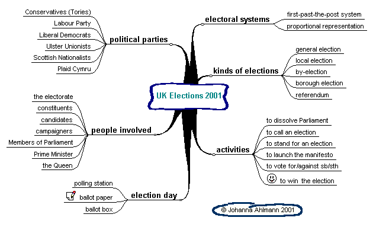

Arbeitsblätter fürs Papier |
webaktive Übungen |
visuelle Kommunikation |
Links |
wir |
Home |
|
Kre |
|||||
| Gestaltung | woher+wieviel | ||||
|
Wortschatz: Eine Mindmap gruppiert, schafft Kategorien und stellt Zusammenhänge her - ein enormer Vorteil gegenüber dem Lernen von isolierten Elementen. Auch fortgeschrittene Lerner finden hier noch eine Technik, sich neue Themen zu erarbeiten und alte zu konsolidieren. |
|||||
|
Beispiel  |
|||||
|
Mit einer solchen Mindmap kann man • Wörter
lernen und wiederholen |
|||||